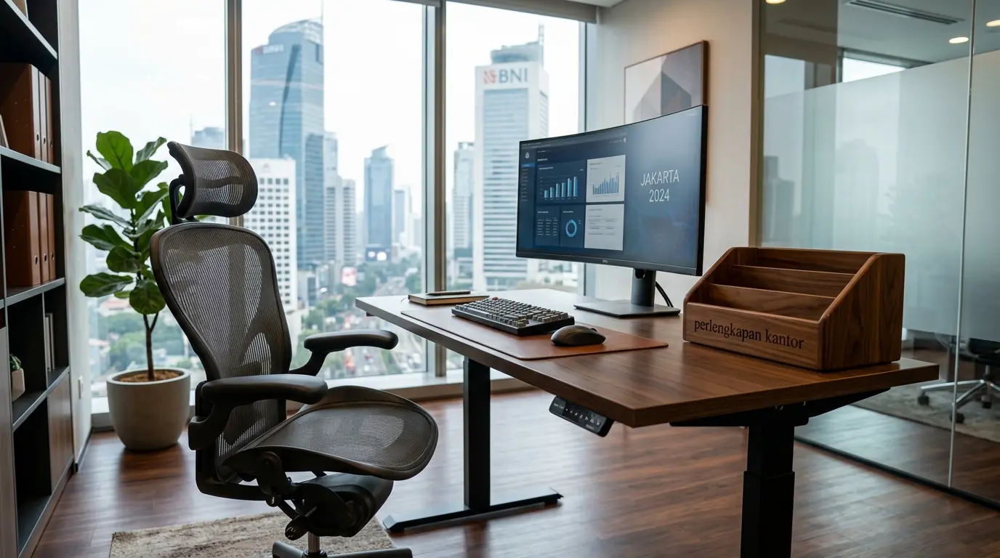

Mengapa Bekerja dari Rumah Sering Menyebabkan Sakit Pinggang?
Sakit pinggang saat WFH terjadi akibat penggunaan fasilitas duduk yang tidak ergonomis serta durasi duduk statis yang terlalu lama tanpa topangan tulang belakang yang tepat. Ketika bekerja dari rumah, batas antara ruang santai dan stasiun kerja profesional sering kali kabur, sehingga banyak pekerja terbiasa mengetik dari sofa empuk, kursi meja makan kayu keras, atau bahkan di atas tempat tidur.
Berdasarkan Laporan Riset Ergonomi Kerja Indonesia 2025, sebanyak 78,4% pekerja jarak jauh di perkotaan mengalami keluhan nyeri punggung bawah (lower back pain) akibat menggunakan kursi makan atau sofa biasa saat bekerja. Fenomena ini diperkuat oleh studi dari Global Occupational Health Association 2026 yang mengonfirmasi bahwa penggunaan kursi kerja tanpa penopang lumbar yang presisi meningkatkan tekanan pada diskus intervertebralis sebesar 40% dibandingkan posisi duduk pada kursi ergonomis berstandar industri.
Faktor utama pemicu keluhan fisik ini meliputi:
- Fasilitas Duduk Tidak Sesuai: Kursi non-kantor tidak memiliki lekukan penopang pinggang (lumbar support) yang menopang kurvatura alami lordosis tulang belakang, memaksa otot pinggang berkontraksi terus-menerus menahan beban tubuh.
- Ketinggian Meja Tidak Proporsional: Meja yang terlalu rendah atau terlalu tinggi memaksa tubuh membungkuk secara konstan dan mengangkat bahu secara tidak wajar.
- Kurangnya Rotasi Gerak: Kebiasaan duduk statis melebihi 2 jam berturut-turut tanpa peregangan atau jeda dinamis memperlambat sirkulasi darah ke bantalan sendi tulang belakang.
| Fasilitas Duduk | Tekanan Tulang Belakang | Potensi Dampak Kesehatan |
|---|---|---|
| Sofa / Tempat Tidur | Sangat Tinggi (Bungkuk Ekstrem) | Nyeri Kronis & Risiko Cedera Diskus Intervertebralis |
| Kursi Makan / Kursi Kayu Biasa | Tinggi (Tanpa Penopang Lumbar) | Pegal Otot, Spasme Pinggang & Postur Miring |
| Kursi Kerja Ergonomis | Optimal (Tersangga Sempurna) | Postur Sehat, Sirkulasi Lancar & Produktivitas Naik |
- Duduk membungkuk di atas sofa meningkatkan tekanan pada diskus lumbar bawah hingga 190% dibandingkan posisi berdiri tegak.
- Dukungan lumbar yang tepat mereduksi ketegangan otot erector spinae hingga 35%, mencegah kelelahan punggung sebelum sore hari.
- Kombinasi kursi ergonomis dan meja berstandar tinggi terbukti meningkatkan fokus kerja hingga 32%.
Bagaimana Mengatasi Sakit Pinggang Saat WFH Secara Efektif?
Mengatasi sakit pinggang saat WFH secara efektif membutuhkan kombinasi pengaturan postur tubuh yang benar dan investasi pada perabot kerja yang dirancang khusus sesuai anatomi fisiologis manusia. Menahan rasa pegal dengan balsam atau obat pereda nyeri hanyalah solusi sementara, sedangkan restrukturisasi stasiun kerja adalah solusi permanen.

Set perlengkapan kantor ergonomis penopang punggung dan meja adjustable memastikan tubuh berada pada postur netral sepanjang hari kerja.
1. Investasi Kursi Kerja Ergonomis Presisi
Penggunaan kursi kerja ergonomis dengan fitur lumbar support yang dapat disesuaikan tinggi-rendah serta kedalamannya merupakan langkah paling krusial. Penopang pinggang ini menjaga kurva alami tulang belakang tetap melengkung secara fisiologis (neutral spine), sehingga menolak beban tubuh secara merata ke seluruh struktur sandaran dan mencegah kelelahan otot bagian bawah. Pastikan kursi memiliki sandaran jaring (breathable mesh) untuk sirkulasi udara optimal dan bantalan dudukan berbahan busa cetak densitas tinggi (high-density molded foam) yang tidak mudah kempes.
2. Pengaturan Ketinggian Meja dan Monitor
Layar monitor atau laptop wajib sejajar dengan arah pandangan mata (garis horizontal pandang lurus atau maksimal 15 derajat ke bawah) untuk mencegah leher menunduk ke depan (forward head posture). Leher yang menunduk 30 derajat dapat menambah beban mekanis setara 18 kg pada tulang belakang bagian atas yang berimbas langsung pada kompensasi otot pinggang bawah. Penggunaan monitor arm atau laptop stand yang dipadukan dengan meja kerja berstandar tinggi membantu mempertahankan postur tegak tanpa membebani area pinggang.
3. Penerapan Interval Peregangan Rutin
Lakukan peregangan mandiri setiap 45 hingga 60 menit sekali menggunakan metode micro-breaks (istirahat sejenak 1-2 menit). Mengubah posisi kerja atau berdiri sejenak membantu melancarkan sirkulasi darah pada area panggul dan merenggangkan otot psoas serta gluteus yang tegang akibat fleksi pinggul terus-menerus.
- Untuk menjaga kenyamanan tulang belakang eksekutif, pilih kursi kerja ergonomis penopang pinggang berstandar internasional.
- Pelajari juga penggunaan meja kerja adjustable ergonomis wfh untuk variasi posisi duduk dan berdiri yang dinamis.
- Temukan pilihan penopang punggung kursi kerja wfh sebagai aksesori tambahan pereda pegal harian.
Apa Saja Kesalahan Utama Saat Mengatur Ruang Kerja WFH?
Banyak pekerja yang merasa telah menata ruang kerja dengan rapi, namun tetap mengeluhkan rasa nyeri pinggang yang menusuk. Kesalahan paling umum adalah membiarkan posisi kaki menggantung, dudukan kursi terlalu keras, serta kemiringan sandaran yang tidak dapat dikunci secara fleksibel.
Tiga kekeliruan konfigurasi yang paling sering terjadi di lapangan antara lain:
- Posisi Kaki Menggantung: Kaki yang tidak menempel rata di lantai meningkatkan beban tarik mekanis pada paha bagian belakang (hamstring) dan panggul, yang secara otomatis menarik ruas tulang lumbar ke bawah. Jika tinggi meja tidak dapat diturunkan, penggunaan pijakan kaki (footrest) adalah kewajiban mutlak.
- Penggunaan Bantal Biasa sebagai Sandaran: Bantal sofa biasa atau guling kecil tidak memiliki densitas struktural yang cukup stabil untuk menahan lekukan tulang belakang. Bantal cenderung pipih saat ditekan beban tubuh dan justru mengubah sudut kurva lumbar menjadi asimetris.
- Mengabaikan Sandaran Lengan (Armrest): Bekerja dengan lengan menggantung tanpa penopang memaksa otot trapezius dan punggung atas bekerja ekstra keras menahan beban lengan (sekitar 10% dari total berat badan), yang kemudian mendistribusikan tegangan kompensasi hingga ke area pinggang.
- ❌ Membiarkan sudut lutut kurang dari 90 derajat atau kaki bergelantungan tanpa tumpuan rata.
- ❌ Memakai kursi statis tanpa mekanisme ayun (recline) atau pengunci sudut kemiringan (tilt-lock).
- ❌ Meletakkan laptop langsung di atas meja tanpa alat peninggi monitor eksternal.
- ❌ Duduk condong ke depan (slouching) selama berjam-jam saat mengikuti rapat daring.
Mengapa Perlengkapan Kantor Ergonomis Sangat Krusial & Di Mana Membelinya?
Bagi pekerja mandiri, eksekutif korporat, HR Manager, maupun Procurement Officer, pengadaan fasilitas kerja ergonomis bukanlah beban biaya (cost), melainkan investasi modal manusia berimbal hasil tinggi. Karyawan yang terbebas dari keluhan sakit pinggang mencatatkan tingkat fokus yang lebih tinggi, angka absensi sakit yang rendah, serta kepuasan kerja yang jauh lebih prima.
Saat memilih mitra penyedia perlengkapan kerja untuk operasional WFH maupun kantor hybrid, pastikan Anda bermitra dengan distributor resmi yang memiliki jaminan garansi mekanikal, ketersediaan suku cadang, dan opsi pengiriman langsung ke alamat masing-masing karyawan.
Perlengkapan Kantor hadir sebagai platform terpercaya yang menyediakan portofolio furnitur kantor komprehensif di Indonesia. Mulai dari kursi kantor ergonomis bersertifikat BIFMA, meja kerja adjustable elektrik, hingga sistem penyimpanan arsip modern, seluruh produk kami dirancang untuk mendukung performa kerja jangka panjang Anda.
Pertanyaan Populer Seputar Sakit Pinggang WFH (FAQ)
Kesimpulan Praktis
Solusi permanen untuk mengatasi sakit pinggang saat WFH adalah dengan menciptakan stasiun kerja yang memenuhi kaidah ergonomi tubuh secara menyeluruh. Mengganti kursi biasa dengan kursi kerja ergonomis presisi bersandar lumbar terbukti secara klinis menjaga kurva tulang belakang dan menaikkan kenyamanan kerja harian.
Tingkatkan kenyamanan dan produktivitas kerja Anda sekarang bersama perlengkapan kantor dari platform terpercaya. Dapatkan koleksi kursi kerja ergonomis, meja adjustable, dan aneka perlengkapan kantor modern hanya di tempat kami. Hubungi konsultan kami hari ini untuk penawaran harga terbaik dan konsultasi tata ruang kerja profesional!

Penulis: Tim Merchandising & Ergonomi Kantor
Divisi riset produk dan tata ruang ergonomis di Perlengkapan Kantor. Berfokus pada integrasi standar kesehatan biomekanik kerja, solusi pencegahan musculoskeletal disorders bagi pekerja WFH, dan pengadaan furnitur korporat berstandar internasional. Ditinjau oleh Spesialis Kesehatan Kerja Korporat.